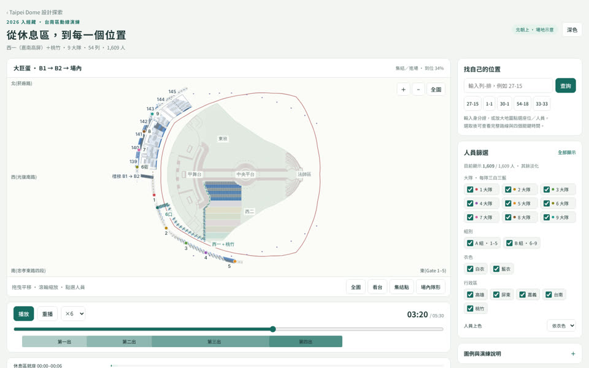
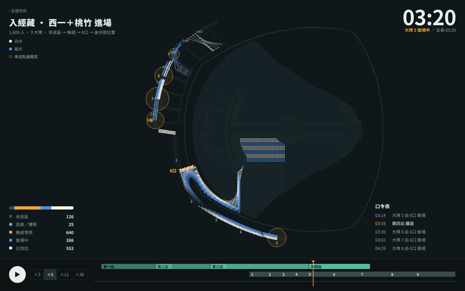
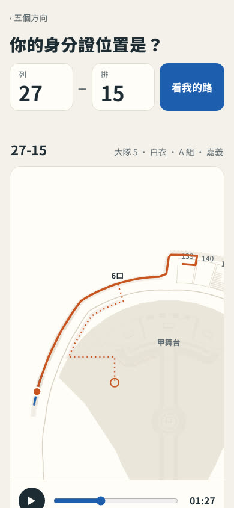
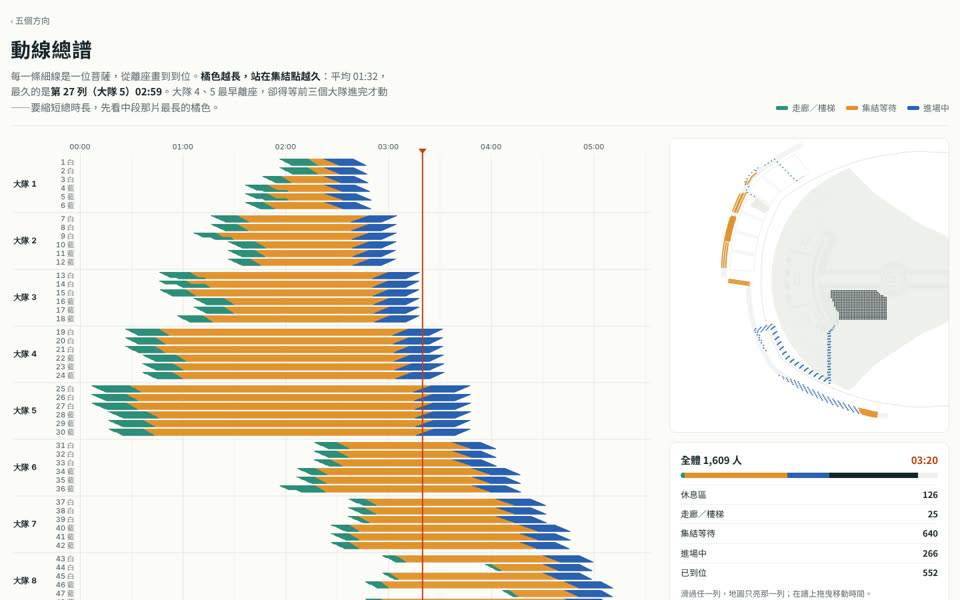
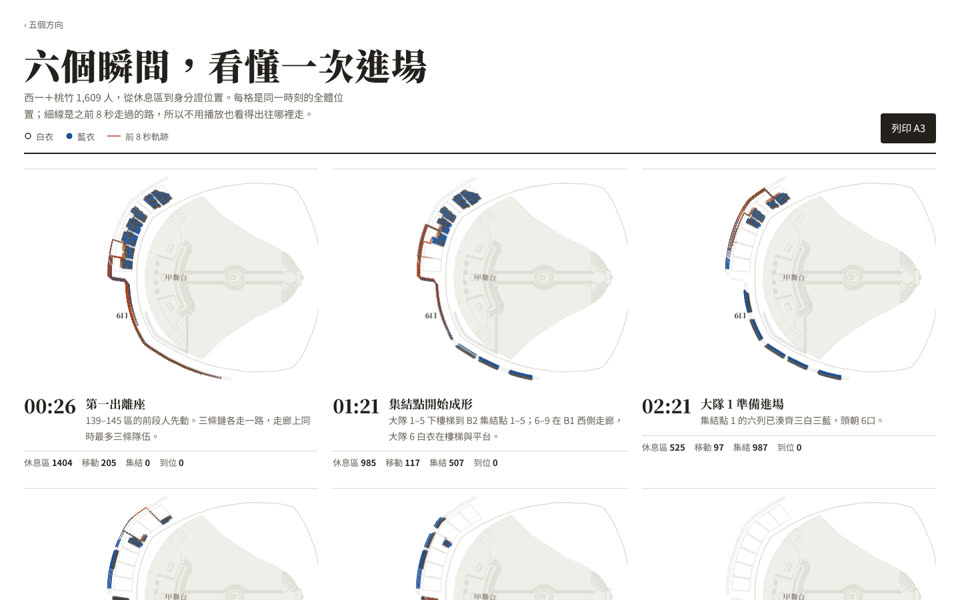
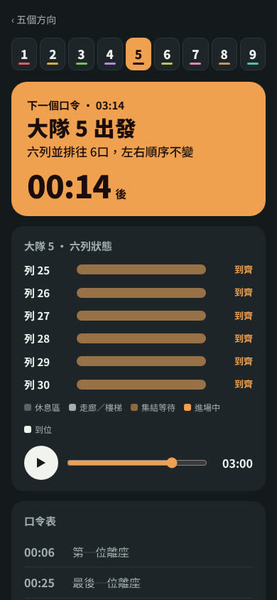

現行頁面把企劃、大隊長、每一位菩薩要的東西放在同一個畫面，結果每個人都得自己找。這裡不改動線、不改資料（1,609 人的時間戳全部沿用），只換「給誰看、在哪裡看」。五個都可以實際操作。

gateIdx 裡。
企劃 · 行前說明會投影、彩排檢討
地圖滿版、深底投影，介面退到四角。人用短拖尾表示移動方向，集結點用橘色圈的大小直接講壅塞程度。底部一條時間軸同時放「第一～四出」與「大隊 1–9 進場」兩軌，右下是會自動往前捲的口令表。

每一位菩薩 · 手機、彩排前一晚或走廊上
一進來只問一件事：你的身分證位置。列、排分兩格數字鍵盤輸入，不必猜「27-15」的格式。地圖甲舞台朝上，與 app《我的走位》同向，只畫你和你這一列。下面是五步口令：起、走、集、進、到，點哪一步地圖就飛到那一段。

企劃 · 筆電上調排程
不播放動畫，把時間攤開：54 列 × 時間，每一條細線是一位菩薩，綠是走、橘是等、藍是進場。一眼就看出大隊 4、5 最早離座、卻等最久——要縮短總時長，該調的是離座波次，不是走路速度。滑過任一列，右邊地圖只亮那一列。

幹部 · 印成 A3 發下去、貼在集結點
六個關鍵時刻的小圖並排，紙張配色、明體標題。靜態圖沒辦法播放，所以每個人畫出「前 8 秒走過的路」當軌跡，方向一看就懂。每格附一句話和四個數字。@page 已設 A3 橫式。

大隊長 · 手機，在集結點喊口令
選一個大隊，整頁換成那個大隊的顏色。最上面是「下一個口令」和倒數，下面六條橫條是這個大隊六列各自的狀態（休息區／走廊／集結／進場／到位），到齊就亮。口令表從「第一位離座」排到「全隊到位」，包含「前一大隊最後一位過 6口」這個交接點。
| 方向 | 給誰 | 裝置 | 回答的問題 | 從現行頁拿掉 |
|---|---|---|---|---|
| A 指揮台 | 企劃 | 投影、大螢幕 | 全場現在進行到哪、哪裡塞 | 側欄、統計卡、長說明 |
| B 我的路 | 每位菩薩 | 手機 | 我要往哪走、跟誰、等多久 | 其他 1,600 人的細節 |
| C 總譜 | 企劃 | 筆電 | 瓶頸在哪、怎麼縮短 | 動畫本身 |
| D 講義 | 幹部、長輩 | 紙本 | 六個時刻各長什麼樣 | 所有互動 |
| E 口令卡 | 大隊長 | 手機 | 下一個口令是什麼、六列到齊沒 | 其他八個大隊 |
不是五選一。這份資料有三種讀者，應該拆成三個入口，共用同一份 data.js 與內插引擎（本目錄的 core.js 已經是這個形狀）：
即使不拆頁，以下可以直接回填現行版本：預設取景框西半、時間軸合一、壅塞圈、個人卡改口令語言、加「你前面／你後面」。